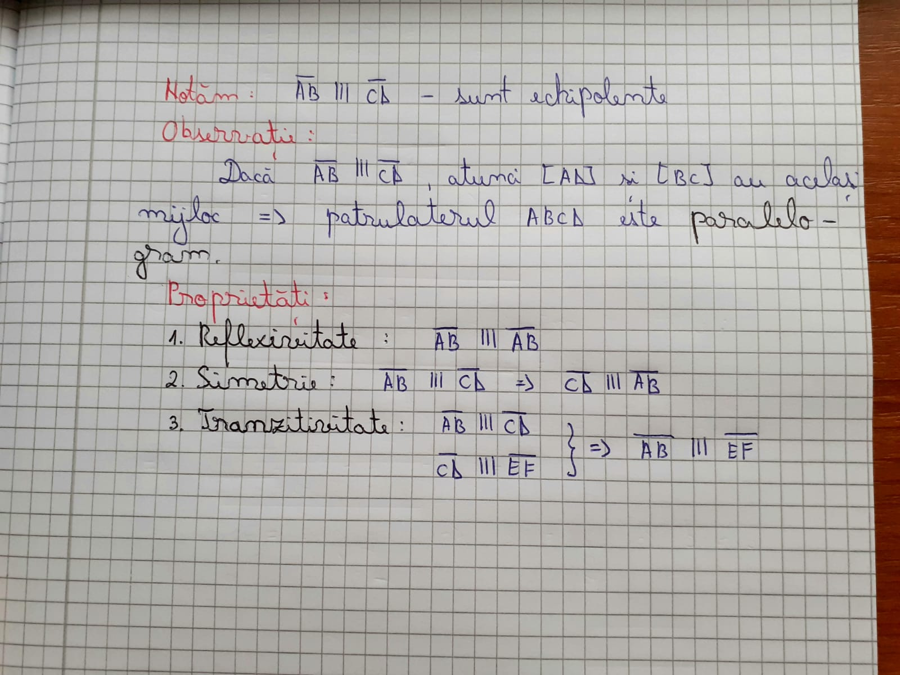
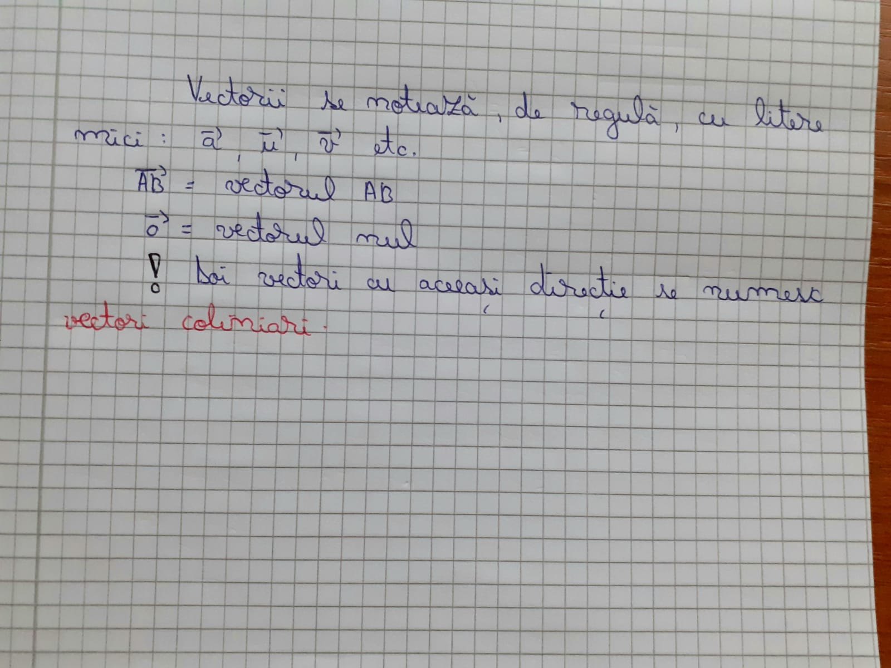

Înainte de a vedea exact ce este un vector, trebuie mai întai să ne familiarizăm cu două noțiuni care ne ajută să definim vectorul propriu-zis. Acestea sunt:
Fie d o dreaptă în planul P. Spunem că dreapta h care este inclusă în același plan are
aceeași direcție cu dreapta d dacă cele două sunt paralele sau dacă h = d.
Direcția dreptei d este mulțimea dreptelor din plan care au aceeași direcție cu d.
Sensul vectorului este dat de sensul de parcurs de la origine spre extremitate.
Se numește segment orientat (vector legat) un segment care are un sens de parcurgere. Modulul acestuia este lungimea segmentului.
Dreapta AB se numește dreapta suport a segmentului orientat (A,B), iar direcția ei se numește direcția
segmentului orientat (A,B). Două segmente orientate au aceeași direcție dacă dreptele lor suport au aceeași direcție.
Două segmente orientate (A,B) și (C,D) au același sens dacă semidreptele (AB și (CD au același sens.
Două segmente orientate (A,B) și (C,D) sunt echipolente dacă au aceeași direcție, același sens și același modul.
Fie segmentul orientat (A,B) și C un punct în plan. Atunci există și este unic punctul D în plan astfel încat (A,B) echipolent cu (C,D).
Se numește vector mulțimea tuturor segmentelor orientate echipolente cu un segment orientat dat.

Prin convenție, vectorul nul are aceeași direcție și același sens cu orice alt vector.
Doi vectori sunt egali dacă au aceeași direcție, același sens și același modul. Doi vectori care au
aceeași direcție și același modul, dar sensuri opuse se numesc vectori opuși.